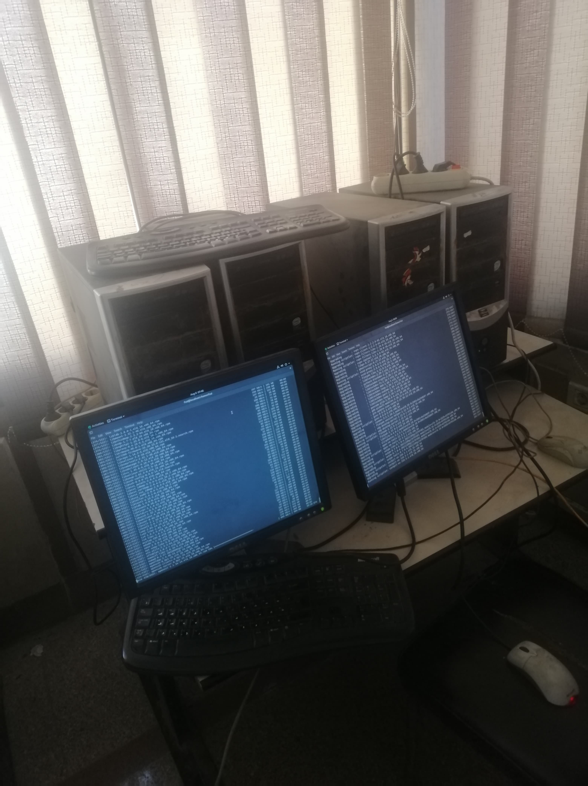
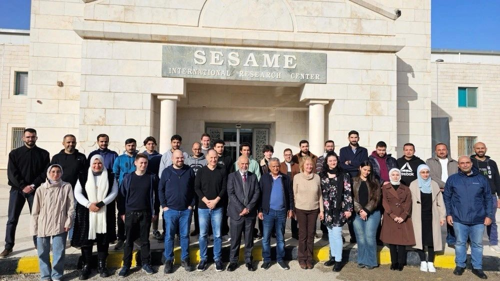
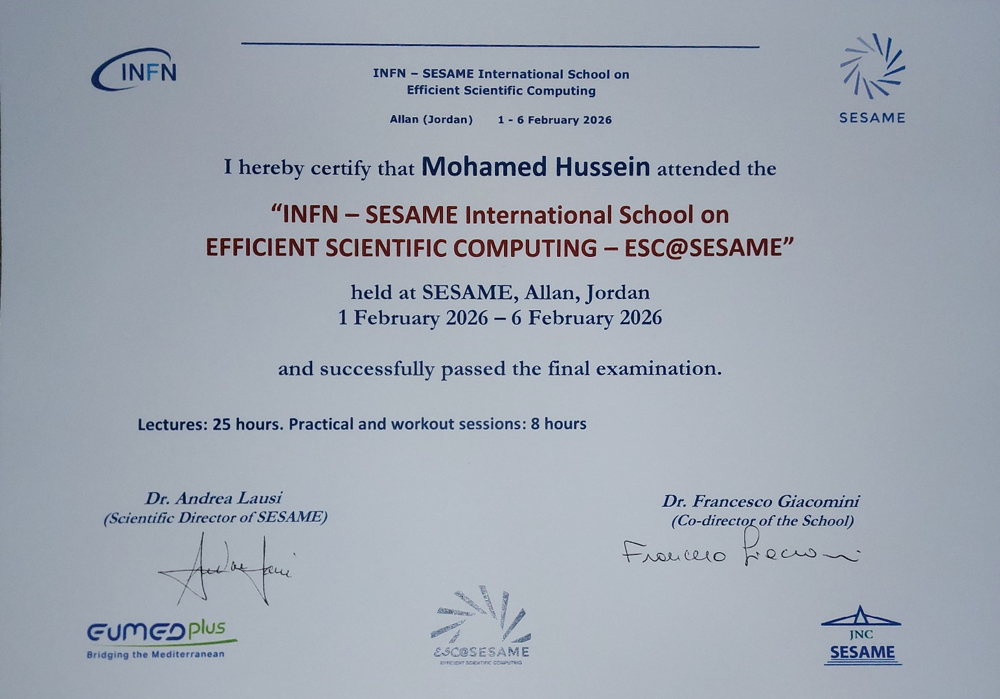

Academic Focus
My specialization is built on a rigorous academic foundation in Computer Architecture and Scientific Computing. I have consistently achieved top-tier grades (A+) in related coursework at Cairo University, driving my passion for the scalable architecture of High-Performance Computing (HPC) systems. My technical focus centers on Parallel Programming, Multithreading, and Cluster Administration.
Research & Industry Experience

HPC R&D Intern
July 2025 – Sept 2025
Faculty of Computers & AI, Cairo University (FCAI-CU)
Worked within the HPC Research Lab under Dr. Ahmed Shawky Moussa.
Focus: Infrastructure modernization, system stability, and research workload optimization.
- HiPer-FC Cluster Rebuild: Co-led the rebuild and optimization of the HiPer-FC HPC cluster, restoring operational stability for research workloads.
- Infrastructure Deployment: Designed and deployed a secure multi-node lab environment using SSH-based access control.
- System Optimization: Analyzed system performance bottlenecks and applied hardware/software tuning to improve efficiency for compute-intensive tasks.

Research Team

Certificate Preview
Engineering Projects
-
C++ Image Processing Engine
A high-performance image manipulation tool built from scratch. I avoided external libraries to focus on computational efficiency and memory management.
- Raw Matrix Operations: Implemented convolution filters (Sobel, Gaussian) using raw 2D arrays.
- Memory Optimization: Utilized manual pointer arithmetic to minimize runtime overhead.
-
High-Performance Math Kernel
A low-level system designed for computationally intensive tasks, focusing on algorithmic speed and data compression.
- Matrix Exponentiation: Optimized algorithms for rapid large-number calculations.
- Compression Pipelines: Implemented memory-efficient data structures to handle large datasets.
Recognition
ESC@SESAME Nomination
I was recommended for the prestigious INFN–SESAME International School on Efficient Scientific Computing. This nomination acknowledges my potential in scientific computing and my ability to tackle complex computational challenges.